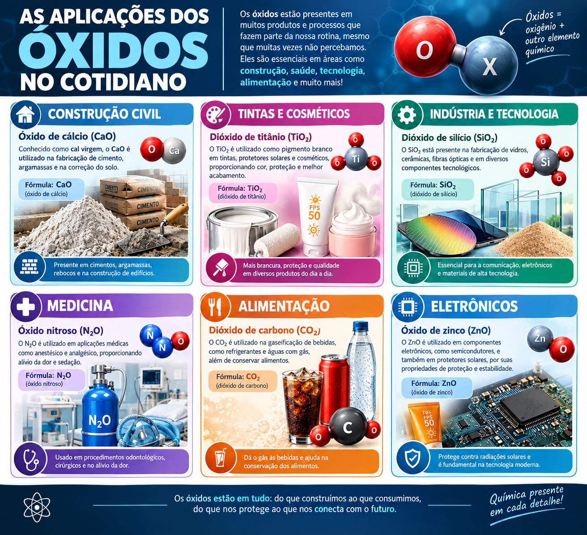

O calcário (CaCO₃) é aquecido para produzir cal virgem: CaCO₃ → CaO + CO₂. Misturada com água, a cal forma a cal hidratada, Ca(OH)₂, usada em argamassas e pinturas.
A cal também é usada para corrigir a acidez do solo na agricultura.

Os óxidos aparecem em construções, na indústria, no meio ambiente e até em produtos de saúde.
O calcário (CaCO₃) é aquecido para produzir cal virgem: CaCO₃ → CaO + CO₂. Misturada com água, a cal forma a cal hidratada, Ca(OH)₂, usada em argamassas e pinturas.
A cal também é usada para corrigir a acidez do solo na agricultura.
A ferrugem é o óxido de ferro III hidratado, formado quando o ferro reage com o oxigênio na presença de água. Ela é porosa e se solta, expondo mais ferro à corrosão.
Pintura, galvanização (camada de zinco) e aço inoxidável são formas de proteger o ferro.
O ferro é obtido de minérios como a hematita (Fe₂O₃). No alto-forno, o monóxido de carbono retira o oxigênio do minério: Fe₂O₃ + 3 CO → 2 Fe + 3 CO₂.
O Brasil é um dos maiores produtores mundiais de minério de ferro.
A bauxita é rica em alumina (Al₂O₃). Dela se extrai o alumínio por eletrólise, um processo que consome muita energia, por isso reciclar latinhas é tão vantajoso.
A alumina também aparece na natureza em pedras preciosas: o rubi e a safira são Al₂O₃ com pequenas quantidades de impurezas.
A sílica (SiO₂) é o principal componente da areia e do quartzo. Fundida e misturada com outros óxidos, como o de sódio e o de cálcio, forma o vidro comum.
A sílica também é usada em chips de computador, fibras ópticas e na fabricação de cerâmicas.
Queima de combustíveis fósseis libera SO₂ e óxidos de nitrogênio. Na atmosfera, eles reagem com a água: SO₃ + H₂O → H₂SO₄ e 3 NO₂ + H₂O → 2 HNO₃ + NO.
A chuva ácida corrói monumentos de mármore, acidifica lagos e prejudica florestas.
Atenção para o ENEM: óxidos ácidos de ametais formam ácidos com a água; esse é o raciocínio por trás da chuva ácida.
O CO₂ é um dos principais gases do efeito estufa e é liberado na queima de combustíveis e nas queimadas. Ele também é absorvido pelas plantas na fotossíntese e pelos oceanos.
Nos refrigerantes, o CO₂ dissolvido forma um pouco de ácido carbônico: CO₂ + H₂O ⇌ H₂CO₃. O “gelo seco” é CO₂ sólido.
O CO é um óxido neutro, incolor e sem cheiro, formado na queima incompleta de combustíveis. Ele se liga à hemoglobina do sangue com muito mais força que o oxigênio e impede o transporte de O₂.
Por isso é perigoso usar aquecedores a gás ou deixar o carro ligado em ambientes fechados.
O óxido de zinco (ZnO), um óxido anfótero, é usado em pomadas para assaduras e em protetores solares, pois reflete e absorve a radiação ultravioleta.
Também é usado na fabricação de borracha, cerâmica e tintas.
1) Escreva a fórmula do óxido. 2) Identifique o outro elemento: metal ou ametal. 3) Veja o Nox para dar o nome. 4) Decida o caráter: básico, ácido, anfótero ou neutro. 5) Escreva a equação e confira o balanceamento.
Atenção para o ENEM: leia com cuidado qual reação a questão descreve (com água, com ácido ou com base) e lembre-se de que o número de átomos de cada elemento deve ser igual nos dois lados da equação.